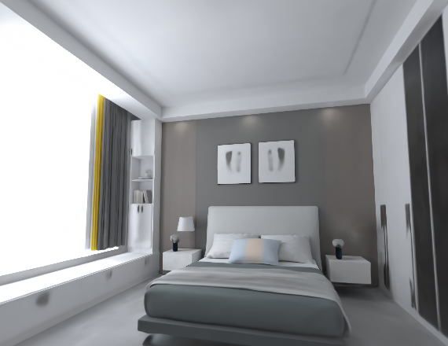
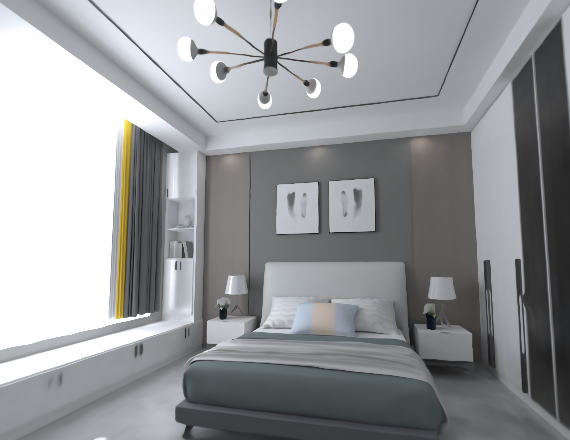
I2-Dataset: Synthetic Indoor Multiview Dataset
| 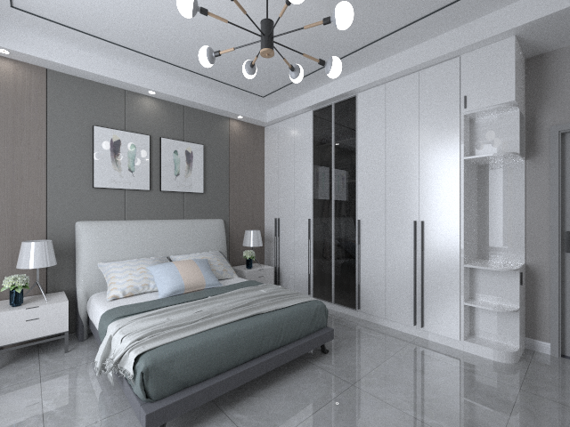 | 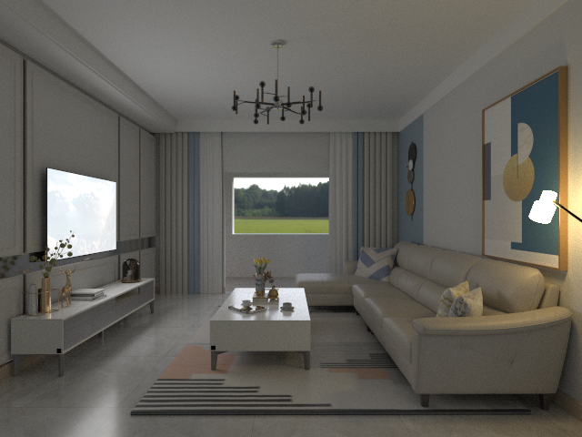 |  |
| 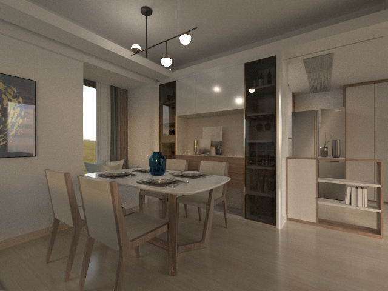 | 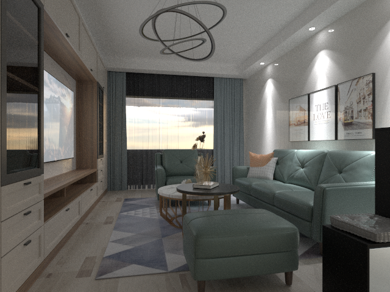 | 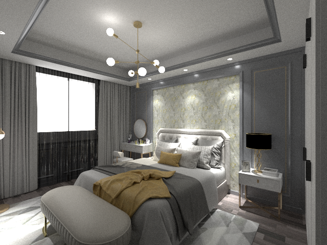 |
We provide a synthetic indoor dataset of well-designed scenes, with ground truth poses, geometry and material annotations.
| 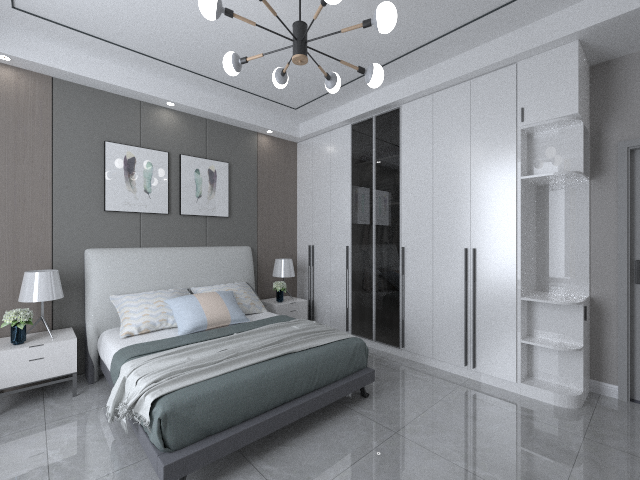 | 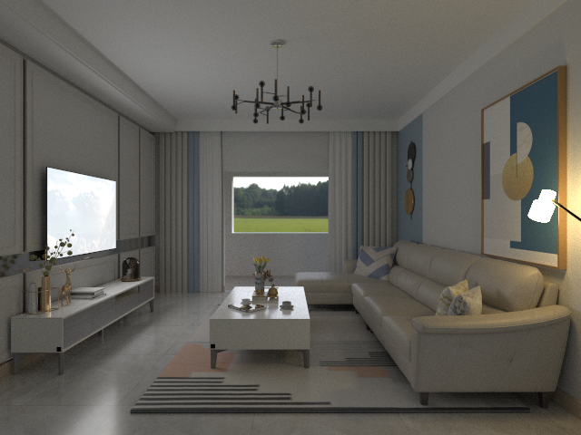 | |
| 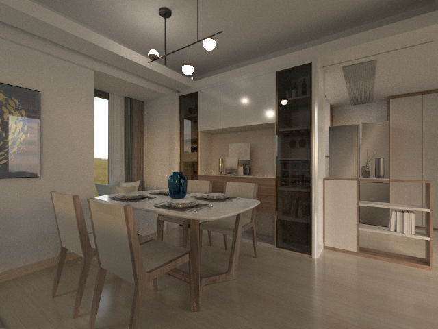 | 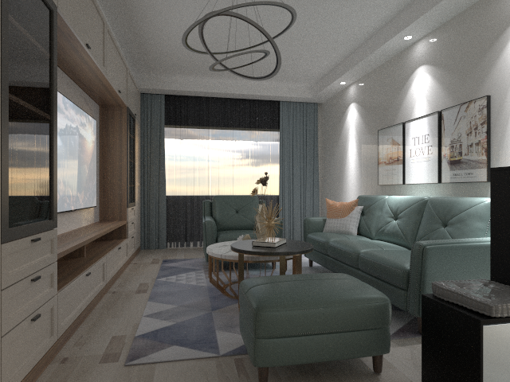 | 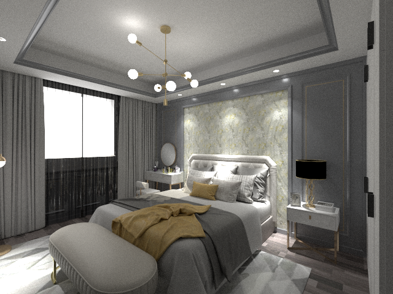 |


 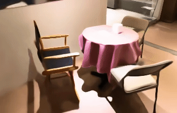
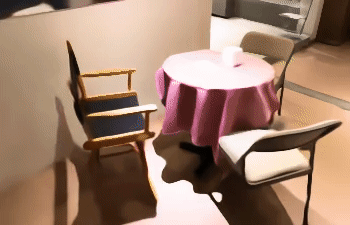


@inproceedings{zhu2023i2,
title={I2-SDF: Intrinsic Indoor Scene Reconstruction and Editing via Raytracing in Neural SDFs},
author={Zhu, Jingsen and Huo, Yuchi and Ye, Qi and Luan, Fujun and Li, Jifan and Xi, Dianbing and Wang, Lisha and Tang, Rui and Hua, Wei and Bao, Hujun and others},
booktitle={Proceedings of the IEEE/CVF Conference on Computer Vision and Pattern Recognition},
pages={12489--12498},
year={2023}
}